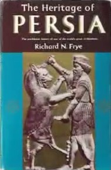
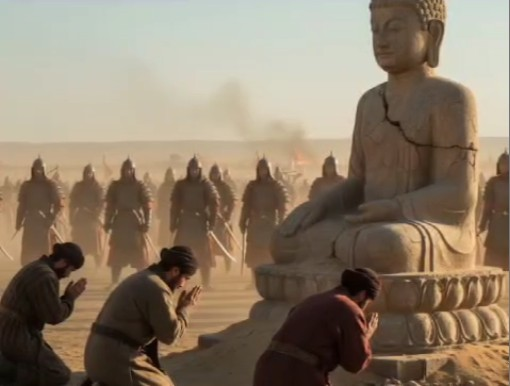
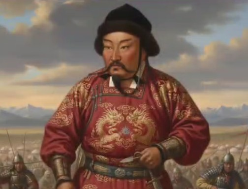
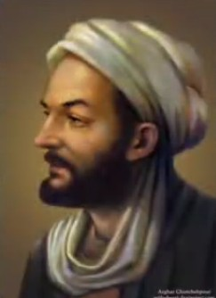
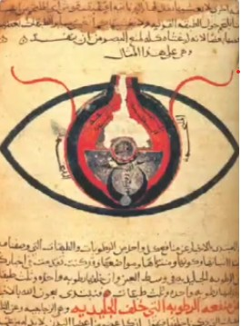
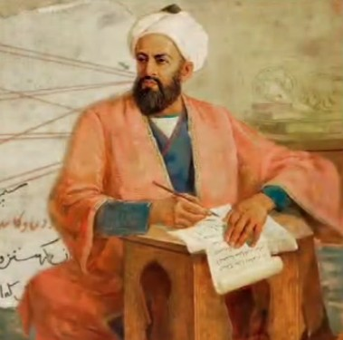
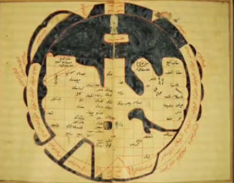
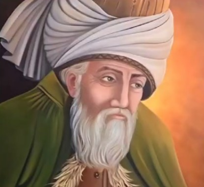
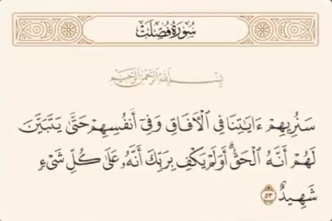
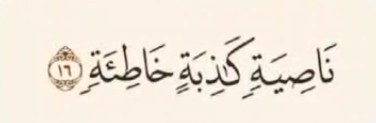

ریچارد نلسون فرای شرق شناس برجسته آمریکایی در کتاب میراث پارسی میگه

فرآیند مسلمان شدن ایرانیا یک روند تدریجی و چند صد ساله بود نه یک رویداد ناگهانی
اون تاکید میکنه که مسلمان شدن ایرانی ها نه با زور شمشیر و اجبار بلکه از طریق جذابیت اسلام صورت گرفت و بین 200 تا 300 سال طول کشید تا ایرانی ها مسلمان شدن
توماس آرنولد مستشرق بریتانیایی در کتاب تاریخ گسترش اسلام میگه :
مسلمان شدن ایرانی ها داوطلبانه و تدریجی بود نه با اجبار یا زور شمشیر
اگر قرار بود مردم ایران با زور شمشیر دینشون رو عوض کنن باید در زمان حمله مغول ها به ایران و تشکیل حکومت ایلخانی ایرانی ها به دین مغول ها که بودایی بودن در میومدن

اما نه تنها ایرانیان بودایی نشدن بلکه مغول ها تحت تاثیر اسلام قرار گرفتن و در زمان غازان خان یکی از شاهان مغول

اسلام به عنوان دین رسمی مغول ها اعلام شد
و اگه اسلام زنجیر خفت و خواری به پای ایران و ایرانی بسته پس چطور ایران بعد از اسلام دانشمندان مسلمانی مثل ابن سینا پرورش داد


که با قوانینش پزشکی دنیا را متحول کرد
ابوریحان بیرونی شعاع زمین را دقیق تر از هر غربی محاسبه کرد


مولانا

با مثنوی عشف الهی را جهانی کرد و هزاران شخصیت برجسته و نوابغی که همه اونها ثمره درخت تنومند اسلام بودن
دکتر هنری کلاسن
متخصص چشم پزشکی و سلول های بنیادی با بیش از صد مقاله علمی در مارس 2024 مسلمان شد
دکتر آتسوشی کمال اوکودا بیولوژیست و کیهان شناس ژاپنی
با تحقیق و مطالعه قرآن به خاطر اشاره های دقیق و علمی آیه 53 سوره فصلت

درمورد خلقت جهان در سال 2025 مسلمان شد
دکتر مک براید متخصص نوروساینس و نورولوژی و پژوهشگر ارشد
موسسه نوروساینس آمریکا پس از همخوانی آیات قرآن مثل آیه 16 سوره علق

با تحقیقات مغز انسان در سال 2024 مسلمان شد
ببینید چه افرادی از اسلام خارح میشن و چه افرادی وارد اسلام میشن